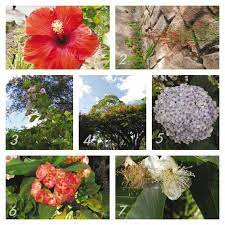

Pagina principal Animales en Honduras Parque nacional la tigra Biosfera del rio Platano
Plantas en Honduras
La república de Honduras, es un país centroamericano, geográficamente ubicado dentro de los trópicos; lo que le permite que su naturaleza brinde un hábitat adecuado tanto para la flora, como para la fauna de especies especiales, variadas y en vía de extinción, lo cual ha planteado al gobierno hondureño, secretarías y organizaciones naturistas nacionales e internacionales, promover y velar por la protección tanto la biodiversidad de especies, como las reservas naturales existentes.
La necesidad de una lista de las plantas de Honduras, se ha hecho sentir desde hace mucho tiempo y con ésta, dar una idea del mundo vegetal hondureño, botánicamente desconocido en su mayor parte, razón por la cual hace necesaria su publicación y que se espera sea de utilidad. Existe también la necesidad de efectuar más exploraciones botánicas para el aumento de conocimientos y especímenes de nuestra flora, en especial de aquellos vegetales que puedan tener importancia económica; como alimento, en la medicina y las industrias. Son pocos los departamentos de la República de Honduras, que todavía no han sido explorados botánicamente, entre ellos: Islas de la Bahía, Colón, Gracias a Dios, Y oro y gran parte de Olancho. Pasarán muchos años más en que todavía no sepamos que otras especies vegetales se encuentran en nuestros bosques o florestas de nuestros valles y montañas, en particular de los departamentos mencionados. Pero que una vez explorados en el campo de la botánica, colectados los diversos especímenes, estudiados y clasificados, contaremos con suficiente material para escribir una flora completa y detallada de Honduras y no esta simple enumeración de plantas.
